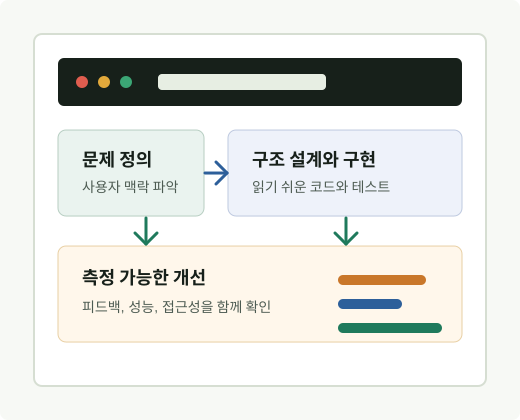

일하는 방식
요구사항을 기능 목록으로만 보지 않고, 사용자가 실제로 겪는 흐름과 팀의 운영 부담까지 함께 살핍니다. 작은 실험으로 가설을 확인하고, 유지보수하기 좋은 구조로 제품을 단단하게 만드는 데 집중합니다.
Product-minded Developer
안녕하세요. 저는 문제의 맥락을 먼저 이해하고, 안정적인 구조와 읽기 쉬운 코드로 팀이 오래 다룰 수 있는 서비스를 만드는 개발자 Sanghoon Han입니다.

About
요구사항을 기능 목록으로만 보지 않고, 사용자가 실제로 겪는 흐름과 팀의 운영 부담까지 함께 살핍니다. 작은 실험으로 가설을 확인하고, 유지보수하기 좋은 구조로 제품을 단단하게 만드는 데 집중합니다.
복잡한 문제를 단계별로 쪼개고, API와 UI 사이의 책임을 명확히 나누며, 성능과 접근성을 기본 품질로 다룹니다. 협업 과정에서는 의사결정의 이유를 문서와 코드에 남기는 편입니다.
사용자 경험, 프론트엔드 아키텍처, 백엔드 API 설계, 자동화된 테스트, 개발 생산성을 높이는 내부 도구에 관심이 있습니다.
Skills
Projects
흩어진 업무 데이터를 한 화면에서 확인하도록 정리해 의사결정 시간을 줄인 내부 운영 도구입니다.
릴리스 전 확인 항목을 자동으로 점검하고 누락된 작업을 알려주는 배포 보조 스크립트입니다.
서비스 안에서 들어오는 피드백을 분류하고 후속 액션까지 이어지게 만든 경량 API 프로젝트입니다.
Experience
사용자 흐름을 기준으로 요구사항을 재정리하고, MVP 범위를 명확히 나눠 빠른 검증이 가능한 형태로 개발했습니다.
반복되는 UI 패턴과 상태 관리를 정리해 신규 화면 개발 속도를 높이고, 리뷰 때 확인해야 할 예외 상황을 줄였습니다.
주요 흐름에 테스트를 추가하고 배포 절차를 문서화해 장애 대응과 온보딩 시간을 줄이는 데 기여했습니다.
Contact
포트폴리오의 이름, 링크, 프로젝트 설명은 실제 정보에 맞게 바꿔 사용하면 됩니다. 아래 연락처도 원하는 채널로 교체해 주세요.